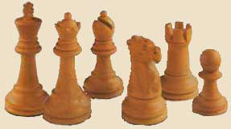

| Δραστηριότητα 5 |
Σκάκι: ένας γοητευτικός τρόπος να αναβιώσεις το παρελθόν
(για… δυνατούς παίκτες)
Λέγεται ότι το σκάκι δεν είναι μόνο αναπαράσταση μάχης αλλά αντανάκλαση της κοινωνίας του Μεσαίωνα. Αξιοποιώντας και τις πληροφορίες που βρήκες από την ενότητα “ Η ζωή στο κάστρο”, προσπάθησε να συνθέσεις ένα δοκίμιο για την πολιτική και κοινωνική ζωή εκείνης της εποχής. Θυμήσου ότι ο αξιωματικός του παιχνιδιού είναι σχετικά νέο πρόσωπο, αντικατέστησε τον επίσκοπο.
|